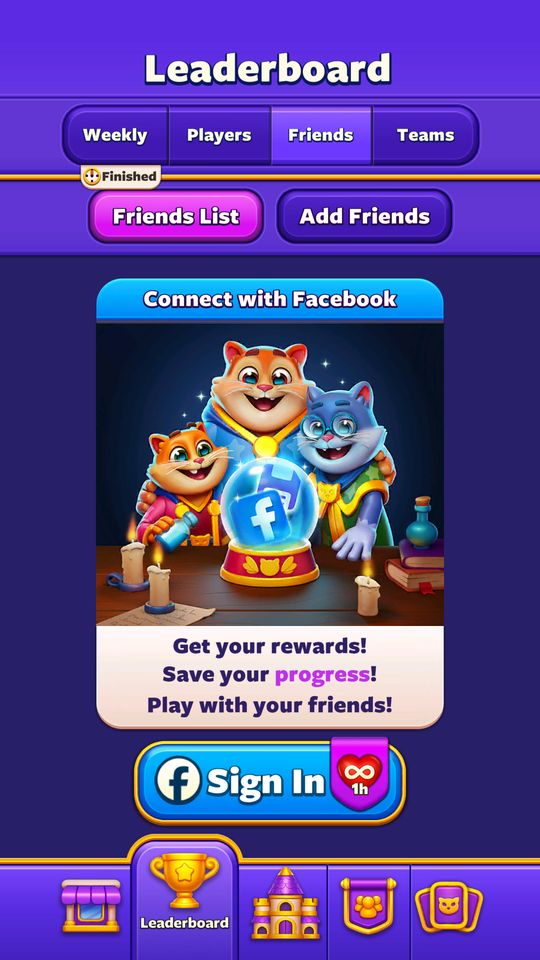
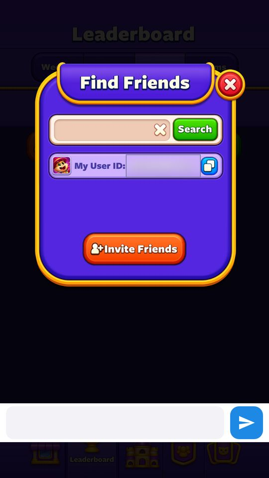

Nguồn mới và việc tiếp theo · Bạn bè (Friends)
Mở Find Friend nếu tab cho phép, thử ô trống/ID sai định dạng rồi cancel; Copy ID và xác nhận toast không lưu công khai ID.
UC ưu tiên: UC-02 Tìm bạn bằng User ID, UC-03 Sao chép User ID của mình để chia sẻ, UC-18 Lỗi mạng khi đồng bộ bạn bè
Gate runtime: gate của snapshot ban đầu trước phục hồi; xem actual và giới hạn round2 phía trên, không suy ra full-feature pass.
Liên kết config: exact_model_source_association
Đủ entry, precondition và 908 UC · GDD hiện tại đầy đủ · Kết luận mã và phần chưa chứng minh
Segment/A/B: default và nhãn variant chỉ là bằng chứng cấu hình; chưa có assignment, phân bổ traffic hoặc uplift mới.
Hồ sơ Friends: 30 config, 4 gap, 3/18 UC có ảnh tham chiếu. Cache và instance ghi ngày tại nguồn; kết quả kiểm chứng mới nằm trong các case dưới đây; không áp dụng cho mọi UC.
Đủ 11 mục đánh giá cho hồ sơ này — data / flow / UC / ảnh / segment / AB / kiến trúc / phần thiếu
Theo dõi toàn bộ 58 danh mục · Full hồ sơ đối soát · Tải GDD JSON đầy đủ · Metadata UI và bảng thưởng đầy đủ
| Mục | Trạng thái theo bằng chứng |
|---|---|
| purpose | documented_static_scope |
| unlock | described_historical_conditions_runtime_boundary_unverified |
| entry_flow | documented_paths_not_all_executed |
| config | source_bound_catalog_present |
| reward | documented_static_rewards_runtime_grant_not_fully_verified |
| use_cases | specified_not_executed_in15nov_ledger |
| screenshots | historical_references_only |
| runtime_actual | not_observed_in15nov_ledger |
| segment_ab | not_identified_in_sources |
| storage_backend_analytics | See full JSON |
| remaining_next_step | See full JSON |
Đã rà hồ sơ không đồng nghĩa mọi nhánh runtime đã pass. Nguồn và bước còn lại nằm trong JSON đầy đủ.
Segment và A/B của feature — 0 dòng có liên hệ nguồn
No matchingrow does not prove no segmentation/AB. Rewardbucketfalsepositives remain explicitly classified.
Consumer, matching basis, selector và giới hạn: full dữ liệu riêng của feature · review chung.
Đối chiếu code / asset · 15/11 — 2 finding
Code/asset 0.0.3063, cache ghi ngày và asset bundle đã đọc từ thiết bị 0.0.3129; mỗi finding giữ đúng nguồn/build, không nâng kiểm tra file thành runtime pass.
MS-FDG-006 — Giá trị MaxFriendCount và nội dung FbConnectReward do Firebase Remote Config quyết định, không có trong build. · resolved_historical_snapshot
Đã trích toàn bộ field/value của FriendsConfigModel từ default0.0.3063 và cache lịch sử hiện có. Nhận định không có giá trị trong client đã được đối chiếu bằng file thật; không xác nhận effective runtime.
Còn lại: Full historical data answered; current effective selection and full runtime remain unverified.
MS-Friends-G001 — · resolved_static_snapshot
Đã trích toàn bộ field/value của FriendsConfigModel từ default0.0.3063 và cache lịch sử hiện có. Nhận định không có giá trị trong client đã được đối chiếu bằng file thật; không xác nhận effective runtime.
Còn lại: Kiểm chứng effective config/asset và nhánh runtime trên đúng build nếu cần.
Finding phía trên đã được bổ sung/thu hẹp bởi MS-FDG-006 ở đầu phần này.
Bạn bè (Friends)
Danh sách bạn 1-1 tách khỏi Teams: tìm bằng User ID, gợi ý từ server, đồng bộ bạn Facebook và nhận thưởng liên kết một lần.
Mô tả
- Friends là danh sách bạn bè 1-1, hoàn toàn tách biệt với hệ thống Teams.
- Người chơi tìm bạn bằng User ID công khai, nhận gợi ý từ backend, gửi và trả lời lời mời kết bạn, hoặc xóa bạn.
- Mỗi người bạn hiển thị avatar, khung, name style, tiến độ level và tên đội.
- Danh sách bạn còn là nguồn dữ liệu cho bảng xếp hạng bạn bè.
- Khi liên kết Facebook lần đầu, game tự thêm bạn Facebook đang chơi và trao một phần thưởng chỉ một lần.
- Mọi thao tác đều gửi analytics friend_interaction kèm nhãn nguồn để phân tích kênh kết bạn nào hiệu quả.
- Toàn bộ quan hệ bạn bè nằm trên backend; client chỉ lưu danh sách id lời mời đến, cờ chưa xem và cờ đã nhận thưởng Facebook.
- Có thể kết bạn qua deeplink mời, liên thông trực tiếp với tính năng Referral.
- Chấm đỏ trên tab Friends bật khi có lời mời mới và tắt ngay khi người chơi mở tab.
Còn thiếu / chưa xác minh
 300 coin chỉ là bản mặc định trong build (gaps).
300 coin chỉ là bản mặc định trong build (gaps).Mở khóa & điểm vào
Bật/tắt bằng Firebase Remote Config key 'FriendsConfigModel': FriendsService.IsEnabled() đọc FriendsConfigModel.IsEnabled; nhánh bạn Facebook bật riêng bằng FriendsConfigModel.IsFacebookFriendsEnabled (FriendsService.GetFacebookFriendsEnabled). Không thấy điều kiện level trong client (suy luận: mở theo cờ server, không theo level).
Điểm vào:
- Tab Friends trong SwipeMenu ở Home (FriendsNavBarNotificationController.OnPageSelected(PageType))
- Popup tìm bạn theo User ID (FindFriendPopup)
- Nút Add Friend trong hồ sơ người chơi khác (FriendProfileController)
- Popup mời bạn (FriendsInvitePopup, FriendsInviteInfoPopup) – dẫn sang Referral
- Deeplink mời bạn (FriendsService.TryAddFriendsFromDeeplink, tham số adj_label)
- Kết nối Facebook (FacebookSignInRewardView)
Cách hoạt động
- Sau khi có dữ liệu người chơi, trạng thái chuyển Initializing (1) và bắn tín hiệu bắt đầu khởi tạo (InitializeData).
- Bốn request chạy để nạp dữ liệu: danh sách bạn, lời mời đến, lời mời đã gửi và gợi ý kết bạn (RefreshAll).
- Mỗi bản ghi FriendUserData được map sang view model, rồi avatar được nạp qua bộ cache ảnh hồ sơ.
- Danh sách được sắp xếp, trạng thái chuyển Synced (2) hoặc SyncFailed (3) nếu lỗi mạng, và bắn tín hiệu hoàn tất.
- Tab Friends gộp ba nhóm trong một danh sách cuộn, ngăn cách bằng tiêu đề nhóm Friend Requests và Suggested.
- Gợi ý được nạp theo trang, mỗi trang 5 mục (SuggestionPageSize); mỗi mục kèm lý do gợi ý từ server.
- Tìm bạn theo User ID: ô nhập giới hạn 11 ký tự, client gọi FindFriend(FindFriendRequestModel{user_public_id}) và lấy hồ sơ qua /v2/get-profile; không thấy thì hiện 'FriendsUserNotFound'.
- Nút kết bạn đổi nhãn theo quan hệ hiện tại: 'FriendsAdd', 'FriendsPending' hoặc 'FriendsAdded'.
- Gửi lời mời qua /v1/send-friend-request kèm nhãn nguồn directory (friends_tab, profile, suggest, deeplink, fb, auto); analytics ghi action 'send'.
- Nếu danh sách đã đủ MaxFriendCount thì hiện 'FriendListFullErrorMessage'; đã gửi rồi thì 'FriendsAlreadySentRequest'; đã là bạn thì 'FriendsAlreadyAdded'.
- Người nhận chấp nhận hoặc từ chối qua /v1/answer-friend-request; chấp nhận thì bản ghi chuyển sang danh sách bạn và bắn FriendAddedSignal.
- Xóa bạn cần xác nhận trong popup riêng rồi gọi /v1/delete-friend (action 'delete'); bỏ qua gợi ý gọi /v1/dismiss-friend-suggestion (action 'dismiss').
- Khi Facebook trả về danh sách bạn, client lọc id không hợp lệ rồi gọi /v1/auto-add-fb-friends để kết bạn hàng loạt với nhãn nguồn fb hoặc auto.
- Nếu chưa nhận thưởng liên kết, phần thưởng FbConnectReward (json default 300 coin) được trao một lần và cờ DidClaimSyncReward được đặt true.
- Deeplink mời tách id người mời bằng biểu thức adj_label=([^\s]+) rồi gọi /v1/auto-add-friend với nhãn nguồn deeplink.
- Sau mỗi lần thắng level, cờ đồng bộ được bật và lần cập nhật định kỳ kế tiếp sẽ làm mới toàn bộ dữ liệu bạn bè; dữ liệu cục bộ lưu qua khối 'FriendsSyncModel' và bị xóa sạch khi xóa tài khoản.
Luồng chi tiết theo code
Sau khi có dữ liệu người chơi, FriendsService.InitializeData() đặt Status = Initializing (enum FriendsServiceStatus: None=0, Initializing=1, Synced=2, SyncFailed=3), bắn FriendsInitializationStartedSignal rồi RefreshAll(): RefreshFriends() (GetMyFriendList → FriendListResponse), RefreshIncomingRequests() (GetMyFriendRequests), RefreshOutgoingRequests() (GetMySentFriendRequests) và RefreshFriendSuggestions() (GetFriendSuggestions). Mỗi bản ghi được map sang view model qua MapFriend/MapRequest/MapUser, sau đó RequestProfileImages() nạp avatar qua ProfileSpriteCacheService; SortFriends() sắp xếp danh sách; kết thúc Status = Synced (hoặc SyncFailed) và bắn FriendsInitializationCompletedSignal. Danh sách hiển thị trong FriendsScrollViewAdapter với các nhóm tiêu đề (RequestTitleElementViewModel, SuggestTitleElementViewModel, DividerElementViewModel). Người chơi gửi lời mời qua SendFriendRequest(user, directory) — tham số directory ghi nguồn ('friends_tab', 'profile', 'suggest', 'deeplink', 'fb', 'auto') để phân tích. Người nhận thấy lời mời trong nhóm Friend Requests và AnswerFriendRequest(userPublicId, isAccepted): nếu chấp nhận thì AddFriendFromRequest() chuyển sang danh sách bạn và bắn FriendAddedSignal. Xoá bạn: DeleteFriend(publicId) → RemoveFromFriends + FriendRemovedSignal. Gợi ý có thể bị bỏ qua bằng DismissFriendSuggestion(publicId, notifyBackend) (SendDismissSuggestion). Nhánh Facebook: khi FacebookLoginService báo OnFacebookFriendsFetched, SanitizeFacebookIds(facebookIds) lọc rồi AutoAddFacebookFriends(facebookIds) tự kết bạn hàng loạt; nếu CanClaimSyncReward() thì trao GetSyncReward() (FriendsConfigModel.FbConnectReward) qua RewardService và SetDidClaimSyncReward(true). Cờ ShouldShowNavBarNotif/HasUnseenRequests điều khiển chấm đỏ trên tab, ResetNavBarNotif() xoá khi mở tab. IntervalUpdate() cùng cờ _shouldSyncRemote (bật khi OnLevelWin) làm mới dữ liệu theo chu kỳ.
Ảnh chụp màn hình (3)
3 ảnh chụp trong game (LDPlayer, bản 0.0.3129, tài khoản thử level 321 → 351 (07/10/2026)). Bấm ảnh để phóng to; ảnh chụp lịch sử mở PNG gốc. Nhãn UC dẫn tới use case tương ứng.


 1 giờ mạng vô hạn
1 giờ mạng vô hạn


Phần thưởng
PHẦN THƯỞNG CỦA FRIENDS
| Mốc | Điều kiện | Phần thưởng |
|---|---|---|
| Liên kết Facebook lần đầu | Đăng nhập Facebook khi IsFacebookFriendsEnabled bật, chỉ một lần trong đời tài khoản | 300 coin (FbConnectReward json default giá trị thật do remote config) |
| Mời bạn mới đạt mốc level | Bạn được mời qua deeplink đạt mốc tiến độ | Do ReferralService quản lý (xem tính năng Referral) |
GIỚI HẠN VÀ THAM SỐ CẤU HÌNH
| Tham số | Giá trị mặc định | Ghi chú |
|---|---|---|
| FriendsConfigModel.IsEnabled | false | Server phải bật thì Friends mới sống |
| FriendsConfigModel.MaxFriendCount | 100 | Số bạn tối đa remote config ghi đè (server) |
| FriendsConfigModel.IsFacebookFriendsEnabled | false | Bật nhánh tự thêm bạn Facebook |
| FriendsConfigModel.FbConnectReward | CurrencyType 1, Amount 300 | 300 coin cho lần liên kết Facebook đầu tiên |
| FriendsService.SuggestionPageSize | 5 | Số gợi ý nạp mỗi trang |
| FindFriendPopup._maxSearchTermLength | 11 | Độ dài tối đa của User ID nhập khi tìm bạn |
Phần thưởng theo code
| Ngữ cảnh | Phần thưởng | Evidence |
|---|---|---|
| Liên kết Facebook lần đầu | FriendsConfigModel.FbConnectReward (RewardModel do server cấu hình) | FriendsService.GetSyncReward; FacebookSignInRewardView |
| Mời bạn mới đạt mốc level | Do ReferralService quản lý (xem feature Referral) | FriendsInvitePopup; localize 'FriendsInviteRewardDescription' |
Số liệu chính
| Chỉ số | Giá trị | Nguồn |
|---|---|---|
| Số bạn tối đa | 100 | FriendsConfigModel.json: MaxFriendCount |
| IsEnabled mặc định | false | FriendsConfigModel.json: IsEnabled |
| IsFacebookFriendsEnabled mặc định | false | FriendsConfigModel.json: IsFacebookFriendsEnabled |
| Thưởng liên kết Facebook | 300 coin (CurrencyType 1) | FriendsConfigModel.json: FbConnectReward |
| Số gợi ý mỗi trang | 5 | FriendsService.SuggestionPageSize |
| Độ dài tối đa của User ID khi tìm | 11 ký tự | FindFriendPopup._maxSearchTermLength |
| Số trạng thái đồng bộ | 4 (None=0, Initializing=1, Synced=2, SyncFailed=3) | FriendsServiceStatus |
| Số nhãn nguồn gửi lời mời | 6 (friends_tab, profile, suggest, deeplink, fb, auto) | FriendsService (directory) |
| Số loại hành động analytics | 5 (send, accept, reject, delete, dismiss) | friend_interaction |
| Số endpoint Friends | 11 endpoint /v1/* cộng /v2/get-profile | BackendEnvironmentConfig.asset |
| Số request khi khởi tạo | 4 (danh sách bạn, lời mời đến, lời mời đã gửi, gợi ý) | FriendsService.RefreshAll |
| Regex tách id từ deeplink | adj_label=([^\s]+) | FriendsService.TryAddFriendsFromDeeplink |
| Tên khối đồng bộ | FriendsSyncModel | FriendsDataService.GetSyncName |
| Cờ đã nhận thưởng Facebook | DidClaimSyncReward, mặc định false | FriendsSyncModel.DidClaimSyncReward |
| Số trường của một bản ghi bạn từ server | 10 (FriendPublicId … FriendTeamName) | FriendUserData / FriendListResponse |
| Số trường view model người chơi | 10 (IsMe, PublicId, UserName, AvatarUrl, AvatarId, Progress, FrameId, NameStyleId, TeamName, TokenId) | FriendUserViewModel |
| Dữ liệu lưu cục bộ | IncomingRequestIds, HasUnseenRequests, SyncModel | FriendsModel |
| Nhãn trạng thái nút kết bạn | FriendsAdd, FriendsPending, FriendsAdded | FindFriendPopup / FriendProfileController |
| Thông báo khi không tìm thấy | FriendsUserNotFound | FindFriendPopup |
| Thông báo khi danh sách đầy | FriendListFullErrorMessage | FriendsService.IsFriendListFull |
| Chuỗi lỗi mạng của backend | unknown_error | FriendsWebResponse |
| Số sự kiện analytics | 5 (friend_interaction, friends_count, friends_tab_impression, invite_popup_impression, invite_send) | Friends analytics |
Ghi chú thiết kế
- Nhãn nguồn directory cho phép đo chính xác kênh nào mang lại nhiều bạn nhất: tab, hồ sơ, gợi ý, deeplink hay Facebook.
- Thưởng liên kết Facebook chỉ trao một lần theo tài khoản, đủ để mồi hành vi liên kết mà không bị lạm dụng.
- Tự thêm bạn Facebook hàng loạt giúp danh sách bạn có nội dung ngay, tránh trạng thái trống rỗng ban đầu.
- Gợi ý theo trang 5 mục giữ danh sách gọn và cho phép backend luân phiên nhóm gợi ý.
- Việc tách Friends khỏi Teams cho phép hai hệ xã hội có nhịp và mục tiêu khác nhau mà không đụng nhau.
Use case (18)
Bấm vào từng use case để mở. Mở/đóng tất cả
UC-01 Khởi tạo và đồng bộ danh sách bạn
Các bước- FriendsService.InitializeData() → Status = Initializing, FriendsInitializationStartedSignal
- RefreshAll() gọi song song RefreshFriends / RefreshIncomingRequests / RefreshOutgoingRequests / RefreshFriendSuggestions
- UpdateFriends(FriendListResponse), UpdateRequests(FriendRequestListResponse, isIncoming)
- RequestProfileImages() nạp avatar qua ProfileSpriteCacheService
- Status = Synced, FriendsInitializationCompletedSignal
| Actor | System |
|---|---|
| Trigger | Vào Home sau khi có dữ liệu người chơi |
| Điều kiện | FriendsConfigModel.IsEnabled = true |
| Kết quả | Danh sách bạn, lời mời đến/đi và gợi ý sẵn sàng hiển thị |
| Quy tắc / số liệu | Lỗi mạng → Status = SyncFailed (FriendsServiceStatus) |
| Evidence | FriendsService.InitializeData; FriendsService.RefreshAll; FriendsService.UpdateFriends; FriendsService.UpdateRequests; FriendsService.RequestProfileImages; FriendsServiceStatus |
UC-02 Tìm bạn bằng User ID
Các bước- FindFriendPopup.OnInputChanged/OnInputSubmitted giới hạn _maxSearchTermLength = 11 ký tự
- OnSearchButtonSelected → FriendsService.FindFriend(publicId)
- FriendsRemoteService.FindFriend(publicId) → FriendProfileData
- Hiện UserProfileView + ProfileImageView + ProfileFrameView và nút Add
| Actor | Player |
|---|---|
| Trigger | Mở FindFriendPopup và nhập ID |
| Điều kiện | Đã bật Friends |
| Kết quả | Thấy hồ sơ rút gọn của người chơi tìm được |
| Quy tắc / số liệu | Không tìm thấy → 'FriendsUserNotFound'. Trạng thái nút đổi theo quan hệ: 'FriendsAdd' / 'FriendsPending' / 'FriendsAdded' |
| Evidence | FindFriendPopup.OnSearchButtonSelected; FriendsService.FindFriend; FriendsRemoteService.FindFriend; FindFriendRequestModel |
UC-03 Sao chép User ID của mình để chia sẻ
Các bước- FindFriendPopup.OnCopyButtonSelected() ghi public id vào clipboard
- Hiện thông báo 'FriendsUserIdCopied'
| Actor | Player |
|---|---|
| Trigger | Bấm nút copy trong FindFriendPopup |
| Điều kiện | - |
| Kết quả | ID (hiển thị kèm nhãn 'FriendsUserID' = "My User ID:") nằm trong clipboard để gửi cho bạn |
| Quy tắc / số liệu | - |
| Evidence | FindFriendPopup.OnCopyButtonSelected; FindFriendPopup._publicId |
UC-04 Gửi lời mời kết bạn
Các bước- FriendsService.SendFriendRequest(user, directory) với directory là nguồn ('friends_tab' / 'profile' / 'suggest' / 'deeplink' / 'fb' / 'auto')
- FriendsRemoteService.SendFriendRequest(SendFriendRequestModel{to_user_public_id}) → SendFriendRequestResponse
- Thêm vào _sentRequests, bắn FriendRequestSentSignal
- Analytics 'friend_interaction' với action 'send'
| Actor | Player |
|---|---|
| Trigger | Bấm Add ở kết quả tìm kiếm, gợi ý hoặc hồ sơ người chơi |
| Điều kiện | Chưa là bạn, chưa có lời mời đang chờ, danh sách chưa đầy |
| Kết quả | Nút chuyển sang 'FriendsRequested'/'FriendsPending', thông báo 'FriendsRequestSent' |
| Quy tắc / số liệu | Danh sách đầy (GetFriendsCount >= FriendsConfigModel.MaxFriendCount) → IsFriendListFull() = true và hiện 'FriendListFullErrorMessage'. Đã gửi rồi → 'FriendsAlreadySentRequest'; đã là bạn → 'FriendsAlreadyAdded' |
| Evidence | FriendsService.SendFriendRequest; FriendsRemoteService.SendFriendRequest; FriendsService.IsFriendListFull; FriendsService.HasPendingRequest; FriendRequestSentSignal |
UC-05 Chấp nhận lời mời kết bạn
Các bước- FriendsService.AnswerFriendRequest(userPublicId, isAccepted = true)
- FriendsRemoteService.AnswerFriendRequest(AnswerFriendRequestModel{from_user_public_id, is_accepted}) → FriendsWebResponse
- RemoveIncomingFriendRequest(publicId) rồi AddFriendFromRequest(vm)
- SortFriends(); bắn FriendAddedSignal
- Analytics 'friend_interaction' action 'accept'
| Actor | Player |
|---|---|
| Trigger | Bấm Accept trong nhóm 'FriendsFriendRequests' |
| Điều kiện | Có lời mời đến (HasIncomingRequest = true) |
| Kết quả | Người gửi vào danh sách bạn của cả hai bên |
| Quy tắc / số liệu | Danh sách đầy → 'FriendListFullErrorMessage' và không nhận được |
| Evidence | FriendsService.AnswerFriendRequest; FriendsService.AddFriendFromRequest; FriendsService.RemoveIncomingFriendRequest; FriendAddedSignal |
UC-06 Từ chối lời mời kết bạn
Các bước- FriendsService.AnswerFriendRequest(userPublicId, isAccepted = false)
- RemoveIncomingFriendRequest(publicId) và bắn FriendRequestRemovedSignal
- Analytics 'friend_interaction' action 'reject'
| Actor | Player |
|---|---|
| Trigger | Bấm Reject/X trên lời mời |
| Điều kiện | Có lời mời đến |
| Kết quả | Lời mời biến mất khỏi danh sách |
| Quy tắc / số liệu | - |
| Evidence | FriendsService.AnswerFriendRequest; FriendsService.RemoveIncomingFriendRequest; FriendRequestRemovedSignal |
UC-07 Huỷ lời mời đã gửi
Các bước- FriendsRemoteService.CancelFriendRequest(CancelFriendRequestModel{to_user_public_id})
- Xoá khỏi _sentRequests và làm mới danh sách
| Actor | Player |
|---|---|
| Trigger | Bấm vào lời mời đang chờ (FindFriendPopup.OnPendingButtonSelected) |
| Điều kiện | Có lời mời trong _sentRequests |
| Kết quả | Lời mời bị thu hồi, có thể gửi lại |
| Quy tắc / số liệu | - |
| Evidence | FriendsRemoteService.CancelFriendRequest; CancelFriendRequestModel; FindFriendPopup.OnPendingButtonSelected |
UC-08 Xoá bạn
Các bước- DeleteFriendPopup xác nhận ('FriendRemoveFriendTitle', 'FriendsAreYouSureToRemoveFriend')
- DeleteFriendCommand → FriendsService.DeleteFriend(publicId)
- FriendsRemoteService.DeleteFriend(DeleteFriendRequestModel{friend_user_public_id})
- RemoveFromFriends(publicId), bắn FriendRemovedSignal
- Analytics 'friend_interaction' action 'delete'
| Actor | Player |
|---|---|
| Trigger | Bấm Remove trong DeleteFriendPopup hoặc hồ sơ bạn |
| Điều kiện | Đang là bạn (IsMyFriend = true) |
| Kết quả | Người đó biến mất khỏi danh sách bạn và bảng xếp hạng bạn bè |
| Quy tắc / số liệu | - |
| Evidence | FriendsService.DeleteFriend; FriendsRemoteService.DeleteFriend; DeleteFriendCommand; DeleteFriendPopup; FriendRemovedSignal |
UC-09 Xem và bỏ qua gợi ý kết bạn
Các bước- FriendsService.RefreshFriendSuggestions() → FriendsRemoteService.GetFriendSuggestions() → FriendSuggestionsResponse
- GetFriendSuggestions() trả List<IFriendScrollElementViewModel> theo trang SuggestionPageSize = 5
- FriendSuggestionViewModel.SuggestionReason cho biết lý do gợi ý
- Bấm Ignore ('FriendsDismiss') → DismissFriendSuggestion(publicId, notifyBackend = true) → SendDismissSuggestion → FriendsRemoteService.DismissFriendSuggestion(DismissFriendSuggestionRequestModel{user_public_id})
- Bắn FriendSuggestionDismissedSignal; analytics 'friend_interaction' action 'dismiss'
| Actor | Player |
|---|---|
| Trigger | Cuộn tới nhóm 'FriendsSuggested' |
| Điều kiện | HasAnySuggestions() = true |
| Kết quả | Gợi ý bị bỏ không hiện lại; danh sách nạp thêm trang tiếp theo |
| Quy tắc / số liệu | SuggestionPageSize = 5 (const trong FriendsService) |
| Evidence | FriendsService.GetFriendSuggestions; FriendsService.DismissFriendSuggestion; FriendsService.SendDismissSuggestion; FriendsRemoteService.DismissFriendSuggestion; FriendSuggestionDismissedSignal |
UC-10 Liên kết Facebook và tự thêm bạn Facebook
Các bước- FacebookLoginService đăng nhập; FriendsService.OnFacebookStateChanged() theo dõi
- OnFacebookFriendsFetched() nhận danh sách id bạn Facebook
- SanitizeFacebookIds(facebookIds) lọc id không hợp lệ
- AutoAddFacebookFriends(facebookIds) → FriendsRemoteService.AutoAddFacebookFriends(AutoAddFacebookFriendsRequestModel{facebook_ids}) → AutoAddFacebookFriendsResponse
- MapAutoAddedFriend(AutoAddedFriendData) thêm thẳng vào danh sách bạn (directory 'fb'/'auto')
| Actor | Player |
|---|---|
| Trigger | Bấm 'FriendsConnectWithFb' |
| Điều kiện | FriendsConfigModel.IsFacebookFriendsEnabled = true |
| Kết quả | Bạn Facebook đang chơi game được thêm ngay không cần lời mời |
| Quy tắc / số liệu | Chỉ chạy khi cờ IsFacebookFriendsEnabled bật; vẫn chịu giới hạn MaxFriendCount |
| Evidence | FriendsService.OnFacebookFriendsFetched; FriendsService.SanitizeFacebookIds; FriendsService.AutoAddFacebookFriends; FriendsRemoteService.AutoAddFacebookFriends; FriendsService.MapAutoAddedFriend |
UC-11 Nhận thưởng liên kết Facebook một lần
Các bước- FriendsService.InitializeFacebookSyncRewardClaimStatus() kiểm tra trạng thái
- CanClaimSyncReward() = true → GetSyncReward() trả RewardModel = FriendsConfigModel.FbConnectReward
- RewardService trao thưởng, FacebookSignInRewardView chạy animation
- FriendsDataService.SetDidClaimSyncReward(true) lưu vào FriendsSyncModel.DidClaimSyncReward
| Actor | Player |
|---|---|
| Trigger | Sau khi liên kết Facebook thành công |
| Điều kiện | FriendsDataService.GetDidClaimSyncReward() = false |
| Kết quả | Người chơi nhận thưởng một lần duy nhất cho việc liên kết Facebook |
| Quy tắc / số liệu | Cờ DidClaimSyncReward đồng bộ theo tài khoản qua SyncService nên đổi máy vẫn không nhận lại được |
| Evidence | FriendsService.CanClaimSyncReward; FriendsService.GetSyncReward; FriendsService.InitializeFacebookSyncRewardClaimStatus; FriendsDataService.SetDidClaimSyncReward; FriendsSyncModel |
UC-12 Kết bạn qua deeplink mời
Các bước- FriendsService.TryAddFriendsFromDeeplink() đọc deeplink, tách id bằng biểu thức 'adj_label=([^\s]+)'
- FriendsRemoteService.AutoAddFriend(AutoAddFriendRequestModel{target_user_public_id}) → AutoAddFriendResponse
- Bạn được thêm với directory 'deeplink'
| Actor | Player |
|---|---|
| Trigger | Mở game từ link mời của bạn |
| Điều kiện | Deeplink chứa nhãn adj_label |
| Kết quả | Hai người thành bạn ngay khi cài đặt qua link mời |
| Quy tắc / số liệu | Liên quan trực tiếp tới Referral (FriendsInvitePopup + ReferralService) |
| Evidence | FriendsService.TryAddFriendsFromDeeplink; FriendsRemoteService.AutoAddFriend; AutoAddFriendRequestModel |
UC-13 Kết bạn từ hồ sơ người chơi khác
Các bước- FriendProfileController.Initialize(UserProfileModel, popupSource) và UpdateView() chọn hiện _addFriendContainer / _removeFriendContainer / _acceptFriendRequestContainer
- OnAddFriendButtonSelected → MapToFriendUser(model) → FriendsService.SendFriendRequest(user, 'profile')
- OnFriendRequestAccepted / OnRemoveFriendSelected cho hai trạng thái còn lại
| Actor | Player |
|---|---|
| Trigger | Mở hồ sơ của một người chơi (từ chat đội, leaderboard) |
| Điều kiện | Không phải chính mình |
| Kết quả | Thao tác kết bạn/xoá bạn ngay trong popup hồ sơ |
| Quy tắc / số liệu | popupSource được ghi lại để phân tích nguồn (chuỗi 'profile_{0}') |
| Evidence | FriendProfileController.Initialize; FriendProfileController.UpdateView; FriendProfileController.OnAddFriendButtonSelected; FriendProfileController.MapToFriendUser |
UC-14 Chấm đỏ thông báo lời mời mới
Các bước- FriendsDataService.UpdateIncomingRequests(incomingRequests) so sánh với FriendsModel.IncomingRequestIds
- Đặt FriendsModel.HasUnseenRequests và FriendsService.ShouldShowNavBarNotif = true
- FriendsNavBarNotificationController.UpdateView() bật _notifContainer
- Mở tab Friends → OnPageSelected(PageType) → FriendsService.ResetNavBarNotif()
| Actor | System |
|---|---|
| Trigger | Có lời mời đến chưa xem |
| Điều kiện | HasUnseenRequests() = true |
| Kết quả | Người chơi thấy chấm đỏ cho tới khi mở tab Friends |
| Quy tắc / số liệu | Danh sách id lưu cục bộ để phân biệt lời mời cũ/mới |
| Evidence | FriendsDataService.UpdateIncomingRequests; FriendsService.HasUnseenRequests; FriendsService.ResetNavBarNotif; FriendsNavBarNotificationController.UpdateView |
UC-15 Làm mới dữ liệu sau khi thắng level
Các bước- FriendsService.OnLevelWin() đặt _shouldSyncRemote = true
- IntervalUpdate() thấy cờ và gọi Refresh() → RefreshAll()
| Actor | System |
|---|---|
| Trigger | Thắng một level |
| Điều kiện | Friends đã khởi tạo |
| Kết quả | Tiến độ level của bạn bè và bảng xếp hạng bạn bè được cập nhật |
| Quy tắc / số liệu | Dùng cờ + IIntervalUpdate để gộp request |
| Evidence | FriendsService.OnLevelWin; FriendsService.IntervalUpdate; FriendsService.Refresh |
UC-16 Danh sách bạn đầy
Các bước- FriendsService.IsFriendListFull() trả true
- FriendsRequestElementView / FriendSuggestionElementView / FriendProfileController hiển thị 'FriendListFullErrorMessage'
| Actor | System |
|---|---|
| Trigger | Thêm bạn khi đã đạt giới hạn |
| Điều kiện | GetFriendsCount() >= FriendsConfigModel.MaxFriendCount |
| Kết quả | Chặn thêm bạn mới cho tới khi xoá bớt |
| Quy tắc / số liệu | MaxFriendCount lấy từ remote config |
| Evidence | FriendsService.IsFriendListFull; FriendsRequestElementView; FriendSuggestionElementView; FriendProfileController |
UC-17 Đồng bộ dữ liệu Friends theo tài khoản
Các bước- FriendsDataService.MarkForLateUpdate(shouldSyncWithBackend) khi có thay đổi
- LateUpdate() lưu qua ISaveLoad<FriendsModel>
- SerializeModelForSync() với GetSyncName() = "FriendsSyncModel"
- OverwriteModelFromSync(data) khi server trả bản mới
- DeleteData() (IDeletable) xoá sạch khi xoá tài khoản
| Actor | System |
|---|---|
| Trigger | SyncService chạy hoặc dữ liệu đổi |
| Điều kiện | - |
| Kết quả | Cờ DidClaimSyncReward và trạng thái lời mời chưa xem theo tài khoản |
| Quy tắc / số liệu | IsDataChangedSinceLastSave/DataSynced quản lý cờ bẩn |
| Evidence | FriendsDataService.SerializeModelForSync; FriendsDataService.GetSyncName; FriendsDataService.OverwriteModelFromSync; FriendsDataService.DeleteData |
UC-18 Lỗi mạng khi đồng bộ bạn bè
Các bước- FriendsWebResponse trả chuỗi 'unknown_error'
- Status = SyncFailed
- FriendsRemoteService.CancelRequests() huỷ các request đang treo khi đóng màn
| Actor | System |
|---|---|
| Trigger | API trả lỗi hoặc timeout |
| Điều kiện | - |
| Kết quả | UI hiển thị trạng thái lỗi thay vì danh sách rỗng gây hiểu nhầm |
| Quy tắc / số liệu | CancellationTokenSource _cts được reset trong Initialize/Dispose |
| Evidence | FriendsRemoteService.CancelRequests; FriendsWebResponse; FriendsServiceStatus.SyncFailed |
Cấu hình (30)
Gộp mọi nguồn: const trong code, JSON mặc định trong Resources, bảng static, storage key, AB test, cờ server.
| Nguồn | Key | Kiểu | Giá trị | Ý nghĩa | Nơi định nghĩa |
|---|---|---|---|---|---|
| Default/code0.0.3063 and historical caches20260910/20261010; per-snapshot source/hash in snapshot_values; not effective-runtime proof | FriendsConfigModel.IsEnabled | bool | default_0.0.3063: false; cache_20260910: true; cache_20261010: true; firebase_20260910: true | Bật/tắt tính năng Friends [15/11: giá trị theo snapshot cụ thể; thiếu field khác với false/0. Không xác nhận assignment hoặc effective runtime.] | Firebase Remote Config key 'FriendsConfigModel' → FriendsService.IsEnabled |
| Default/code0.0.3063 and historical caches20260910/20261010; per-snapshot source/hash in snapshot_values; not effective-runtime proof | FriendsConfigModel.MaxFriendCount | int | default_0.0.3063: 100; cache_20260910: 100; cache_20261010: 100; firebase_20260910: 100 | Số bạn tối đa [15/11: giá trị theo snapshot cụ thể; thiếu field khác với false/0. Không xác nhận assignment hoặc effective runtime.] | FriendsService.IsFriendListFull |
| remote config | FriendsConfigModel.FbConnectReward | RewardModel | server | Thưởng một lần khi liên kết Facebook | FriendsService.GetSyncReward |
| Default/code0.0.3063 and historical caches20260910/20261010; per-snapshot source/hash in snapshot_values; not effective-runtime proof | FriendsConfigModel.IsFacebookFriendsEnabled | bool | default_0.0.3063: false; cache_20260910: true; cache_20261010: true; firebase_20260910: true | Bật nhánh tự thêm bạn Facebook [15/11: giá trị theo snapshot cụ thể; thiếu field khác với false/0. Không xác nhận assignment hoặc effective runtime.] | FriendsService.GetFacebookFriendsEnabled |
| code const | FriendsService.SuggestionPageSize | int | 5 | Số gợi ý kết bạn nạp mỗi trang | FriendsService (const, client default) |
| code const | FindFriendPopup._maxSearchTermLength | int | 11 | Độ dài tối đa của User ID nhập khi tìm bạn | FindFriendPopup (const) |
| code enum | FriendsServiceStatus | enum int | None=0, Initializing=1, Synced=2, SyncFailed=3 | Trạng thái đồng bộ dữ liệu bạn bè | FriendsServiceStatus |
| code const | directory (nguồn gửi lời mời) | string | "friends_tab", "profile", "suggest", "deeplink", "fb", "auto" | Nhãn nguồn khi gửi lời mời, dùng cho analytics | FriendsService (chuỗi trong strings-by-type.tsv) |
| code const | hành động friend_interaction | string | "send", "accept", "reject", "delete", "dismiss" | Loại tương tác gửi lên analytics | FriendsService |
| code const | regex deeplink | string | "adj_label=([^\\s]+)" | Mẫu tách id người mời từ deeplink Adjust | FriendsService.TryAddFriendsFromDeeplink |
| code field | FriendsModel | class | IncomingRequestIds, HasUnseenRequests, SyncModel | Dữ liệu Friends lưu cục bộ | FriendsModel / ISaveLoad<FriendsModel> |
| code field | FriendsSyncModel.DidClaimSyncReward | bool | false (mặc định) | Đã nhận thưởng liên kết Facebook chưa | FriendsSyncModel |
| code field | FriendUserViewModel | class | IsMe, PublicId, UserName, AvatarUrl, AvatarId, Progress, FrameId, NameStyleId, TeamName, TokenId | Thông tin hiển thị của một người chơi trong hệ Friends | FriendUserViewModel |
| code field | FriendUserData (server) | class | FriendPublicId, FriendNickName, FriendImageUrl, FriendImageId, FriendProgress, FriendFrameId, FriendNameStyle, FriendTokenId, FriendTeamId, FriendTeamName | Bản ghi bạn bè trả về từ backend | FriendUserData / FriendListResponse |
| storage key | FriendsSyncModel | sync name | "FriendsSyncModel" | Tên khối dữ liệu Friends trong SyncService | FriendsDataService.GetSyncName |
| asset | FriendsScrollViewFactory.asset, FriendsCurrencyView.asset | ScriptableObject | - | Factory prefab cho danh sách bạn và hiển thị tiền thưởng | Assets/MonoBehaviour/ |
| asset | BackendEnvironmentConfig – endpoint Friends (chỉ path) | string | /v1/send-friend-request, /v1/get-my-friend-requests, /v1/get-my-sent-friend-requests, /v1/answer-friend-request, /v1/cancel-friend-request, /v1/get-my-friend-list, /v1/delete-friend, /v1/auto-add-fb-friends, /v1/get-friend-suggestions, /v1/dismiss-friend-suggestion, /v1/auto-add-friend; tra cứu hồ sơ: /v2/get-profile | Đường dẫn API của Friends | Assets/MonoBehaviour/BackendEnvironmentConfig.asset |
| json default | FriendsConfigModel.json: IsEnabled | false | Resources/defaultconfigs/FriendsConfigModel.json (client default, remote config ghi đè) | ||
| json default | FriendsConfigModel.json: MaxFriendCount | 100 | Resources/defaultconfigs/FriendsConfigModel.json (client default, remote config ghi đè) | ||
| json default | FriendsConfigModel.json: FbConnectReward.CurrencyType | 1 | Resources/defaultconfigs/FriendsConfigModel.json (client default, remote config ghi đè) | ||
| json default | FriendsConfigModel.json: FbConnectReward.Amount | 300 | Resources/defaultconfigs/FriendsConfigModel.json (client default, remote config ghi đè) | ||
| json default | FriendsConfigModel.json: IsFacebookFriendsEnabled | false | Resources/defaultconfigs/FriendsConfigModel.json (client default, remote config ghi đè) | ||
| server cache (historical) | FriendsConfigModel (live) = default? | 1/8 key trùng default, 7 key khác/thêm | Đối chiếu config server thật (CachedRemoteConfigs) với FriendsConfigModel.json | Configs/CachedRemoteConfigs + Firebase RC template 3197 — đọc từ LDPlayer 2026-09-10, segment non-purchaser, level 320 (spoof) | |
| server cache (historical) | FriendsConfigModel: isEnabled | true | server ghi đè (default = false) | Configs/CachedRemoteConfigs + Firebase RC template 3197 — đọc từ LDPlayer 2026-09-10, segment non-purchaser, level 320 (spoof) | |
| server cache (historical) | FriendsConfigModel: fbConnectReward.currencyType | 2 | server ghi đè (default = 1) | Configs/CachedRemoteConfigs + Firebase RC template 3197 — đọc từ LDPlayer 2026-09-10, segment non-purchaser, level 320 (spoof) | |
| server cache (historical) | FriendsConfigModel: fbConnectReward.amount | 1 | server ghi đè (default = 300) | Configs/CachedRemoteConfigs + Firebase RC template 3197 — đọc từ LDPlayer 2026-09-10, segment non-purchaser, level 320 (spoof) | |
| server cache (historical) | FriendsConfigModel: fbConnectReward.timeSpan | 01:00:00 | server-only (không có trong default) | Configs/CachedRemoteConfigs + Firebase RC template 3197 — đọc từ LDPlayer 2026-09-10, segment non-purchaser, level 320 (spoof) | |
| server cache (historical) | FriendsConfigModel: fbConnectReward.chestType | 0 | server-only (không có trong default) | Configs/CachedRemoteConfigs + Firebase RC template 3197 — đọc từ LDPlayer 2026-09-10, segment non-purchaser, level 320 (spoof) | |
| server cache (historical) | FriendsConfigModel: fbConnectReward.collectionPackType | 0 | server-only (không có trong default) | Configs/CachedRemoteConfigs + Firebase RC template 3197 — đọc từ LDPlayer 2026-09-10, segment non-purchaser, level 320 (spoof) | |
| server cache (historical) | FriendsConfigModel: isFacebookFriendsEnabled | true | server ghi đè (default = false) | Configs/CachedRemoteConfigs + Firebase RC template 3197 — đọc từ LDPlayer 2026-09-10, segment non-purchaser, level 320 (spoof) |
Backend / server
| Command | Chiều | Mục đích |
|---|---|---|
SendFriendRequest(SendFriendRequestModel{to_user_public_id}) → SendFriendRequestResponse | client→server | gửi lời mời kết bạn |
GetMyFriendRequests → FriendRequestListResponse | client→server | lấy lời mời đến |
GetMySentFriendRequests → FriendRequestListResponse | client→server | lấy lời mời đã gửi |
AnswerFriendRequest(AnswerFriendRequestModel{from_user_public_id, is_accepted}) → FriendsWebResponse | client→server | chấp nhận/từ chối |
CancelFriendRequest(CancelFriendRequestModel{to_user_public_id}) | client→server | huỷ lời mời đã gửi |
GetMyFriendList → FriendListResponse | client→server | danh sách bạn |
GetFriendSuggestions → FriendSuggestionsResponse | client→server | gợi ý kết bạn |
DismissFriendSuggestion(DismissFriendSuggestionRequestModel{user_public_id}) | client→server | bỏ qua gợi ý |
DeleteFriend(DeleteFriendRequestModel{friend_user_public_id}) | client→server | xoá bạn |
AutoAddFacebookFriends(AutoAddFacebookFriendsRequestModel{facebook_ids}) → AutoAddFacebookFriendsResponse | client→server | tự kết bạn với bạn Facebook |
AutoAddFriend(AutoAddFriendRequestModel{target_user_public_id}) → AutoAddFriendResponse | client→server | kết bạn tự động qua deeplink |
FindFriend(publicId) → FriendProfileData (FindFriendRequestModel{user_public_id}) | client→server | tra cứu người chơi theo ID |
Giao diện (UI)
| Element | Class | Mục đích |
|---|---|---|
| Tab Friends | Modules.Contexts.Home.Friends.Scripts.UI.FriendsScrollViewAdapter | danh sách gộp bạn / lời mời / gợi ý |
| Dòng bạn / lời mời / gợi ý | FriendsFriendElementView, FriendsRequestElementView, FriendSuggestionElementView, FriendsElementViewBase | hiển thị và thao tác từng dòng |
| Tiêu đề nhóm và phân cách | FriendsRequestsTitleElementView, FriendsSuggestTitleElementView, FriendsDividerElementView | chia nhóm 'FriendsFriendRequests' / 'FriendsSuggested' |
| Popup tìm bạn | FindFriendPopup | tìm theo User ID, copy ID, mời |
| Popup mời bạn | FriendsInvitePopup, FriendsInviteInfoPopup | chia sẻ link mời qua Android Intent ACTION_SEND |
| Popup xoá bạn | DeleteFriendPopup, DeleteFriendPopupArgs | xác nhận xoá |
| Chấm đỏ tab Friends | FriendsNavBarNotificationController | báo có lời mời mới |
| Thưởng liên kết Facebook | FacebookSignInRewardView | hiển thị và nhận FbConnectReward |
| Khối kết bạn trong hồ sơ | Modules.Contexts.Home.Profile.Scripts.FriendProfileController | Add/Accept/Remove ngay trong popup hồ sơ |
Analytics (5)
| Event | Tham số | Khi nào |
|---|---|---|
friend_interaction | action (send/accept/reject/delete/dismiss), directory (friends_tab/profile/suggest/deeplink/fb/auto) | mọi thao tác bạn bè |
friends_count | số bạn hiện có | đồng bộ danh sách |
friends_tab_impression | - | mở tab Friends |
invite_popup_impression | - | mở FriendsInvitePopup |
invite_send | - | gửi link mời |
Storage keys
FriendsSyncModel (SyncService) FriendsModel (ISaveLoad: IncomingRequestIds, HasUnseenRequests)
Chưa đọc được / ghi chú
- 15/11 — resolved_historical_snapshot: Đã trích toàn bộ field/value của FriendsConfigModel từ default0.0.3063 và cache lịch sử hiện có. Nhận định không có giá trị trong client đã được đối chiếu bằng file thật; không xác nhận effective runtime. Còn lại: Kiểm chứng effective config/asset và nhánh runtime trên đúng build nếu cần.
- Endpoint HTTP cụ thể nằm trong BackendEnvironmentConfig.asset, không chép vào tài liệu.
- Cách backend sinh gợi ý (SuggestionReason) không nhìn thấy từ client.
- [Runtime 2026-09-10] Config server LIVE đã đọc trực tiếp từ cache máy (không cần request); các hàng 'server live' là giá trị server ghi đè/thêm so với default.
Tính năng liên quan
Mời bạn (Referral) Hồ sơ (Profile) Bảng xếp hạng Tài khoản & đồng bộ Đội (Teams)
Nguồn đã đọc
- Il2CppDumper/dump.cs: FriendsService, FriendsRemoteService, FriendsDataService, FriendsConfigModel, FriendsModel, FriendsSyncModel, FriendsServiceStatus, FindFriendPopup, FriendsInvitePopup, FriendProfileController, các *RequestModel
- RecoveredNative/PseudoC/Assembly-CSharp/Modules/Contexts/Home/Friends/Scripts/**
- RecoveredNative/strings-by-type.tsv (FriendsService, FriendsInvitePopup, EventSender friend_*/invite_*)
- GameDesign/appendix/localization.tsv (Friends*)